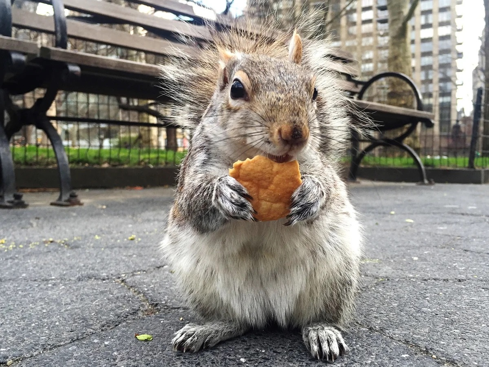

The Eastern Gray Squirrel is the most common squirrel you'll encounter in New York City. They are a ubiquitous presence in parks, backyards, and even bustling city streets. Known for their adaptability and intelligence, these squirrels have thrived in the urban environment.
Eastern Gray Squirrels typically have gray fur, although some individuals may have black or reddish-brown coats. They have a bushy tail that helps them balance and a white belly. Their size ranges from 9 to 12 inches long, with their tail adding another 7 to 10 inches.
These squirrels are diurnal, meaning they are active during the day. They are excellent climbers and jumpers, often seen leaping from tree to tree or scurrying across power lines. They are also known for their habit of burying nuts and other food items, which they often relocate with remarkable accuracy.
Eastern Gray Squirrels have a varied diet, including nuts, seeds, fruits, fungi, and even insects. In urban environments, they may also supplement their diet with food found in bird feeders or discarded by humans.
Eastern Gray Squirrels play an important role in the urban ecosystem by dispersing seeds and helping to regenerate forests. They also provide a source of food for predators such as hawks and owls.